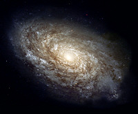

COOL IDEAS
Astronomy is science that will challenge your imagination. How many stars in a galaxy? How many galaxies in the known universe? How many strange worlds are out there on other planets, orbiting other stars, and what are they like? Is there life on planets besides on Earth? The distances are mind-boggling. The numbers are immense.
Find astronomy science fair project ideas like measuring the distance to a star, learning how to collect your own data from an orbiting observatory, and many more. For cool ideas log on here

Some useful notes on astronomical data for your cool ideas is here
RESEARCH IDEAS
1. Binary black hole population analysis
We currently use KDE as a non-parametric method to study mass and spin distributions from gravitational wave observations. The idea is to extend this to multiple dimensions and include cosmological parameters. The method has known biases that need fixing. A promising direction is replacing KDE with normalizing flows, being careful to keep results unbiased. Also need to better understand the limitations of the parameter estimation data we use.
2. Astrophysical modeling of binary black hole formation
What are the models for binary stellar evolution that lead to binary black holes we observe in gravitational wave detections? Worth surveying the main formation channels and understanding which ones are supported or challenged by current observations.
3. LIGO data analysis and search pipelines
Are we doing the right searches? Familiar with PyCBC but want to understand how other pipelines like GstLAL and unmodelled burst searches work and how they differ. What statistics do they use and what might they be missing?
4. Parameter estimation systematics
How do PSD errors and waveform model choice affect parameter estimation results? These are important sources of bias that are not always well understood.
5. Tests of general relativity
Using ringdown to test GR, or subtracting the best-fit waveform and looking at what is left in the data. Any excess signal in the residual could point to a deviation from GR. Also need to understand how waveform systematics affect these tests.